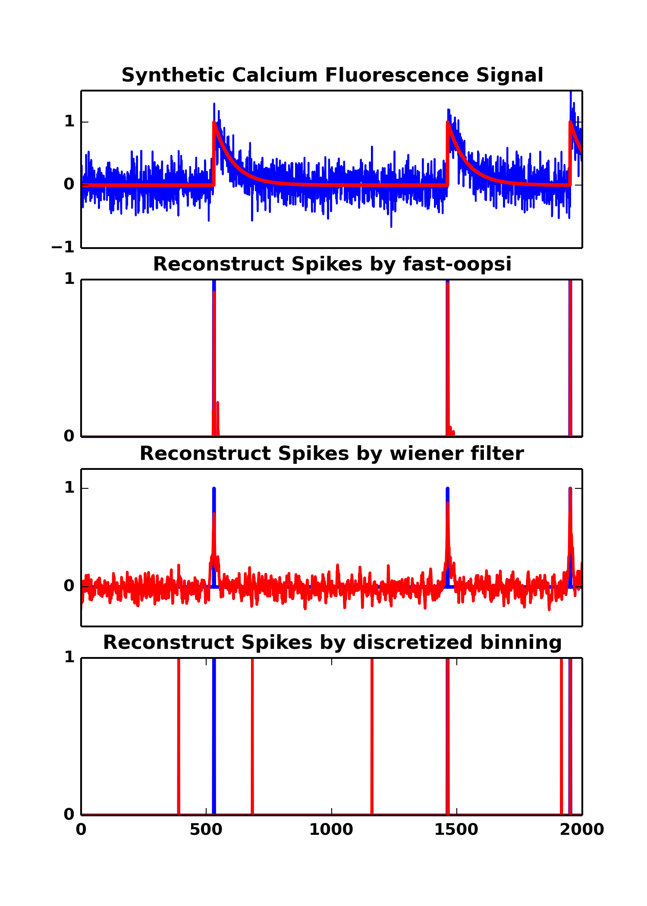

Connectomics – Inferring Connectivity From Calcium Fluorescence
What's the connectivities in population of neurons ? connectomics
What's the mathematical model of spikes ? mathematics
How do neurons comupte and memory ? intelligence
We are working towards these exciting problems !
Py-oopsi : the python implementation of the fast-oopsi algorithm
Fast-oopsi was developed by Dr. joshua vogelstein in 2009, which is now widely used to extract neuron spikes from calcium fluorescence signals. Here, we propose detailed implementation of the fast-oopsi algorithm in the python programming language, which is called py-oopsi. Some corrections are also made to the original fast-oopsi paper.
The py-oopsi implementation can be obtained at: py-oopsi @ github
|
 |
Top (a), The synthetic calcium fluorescence trace, random noise are added to the ground truth signal (shows in red color). The parameters used to generate the synthetic fluorescence signals are : T=2000, dt=0.02ms, lambda=0.1, tau=1.5 and sigma=0.2.
Bottom (b), (c), (d), The reconstructed spikes from fluorescence trace using py-oopsi, wiener filter, and discretize binning. The py-oopsi favors sparse (by adopting Poison prior and Gaussian approximation) and non-negativity, it has the most sparse yet positive spikes. Wiener filter has oscillary at the inferred spikes. It can also reconstruct spikes correctly. We may, for example, set a threshold at 0.5 to obtain clean spikes. Discretize with binning is not robust agains noise. However, in stetter2012, he used discretized with binning and GTE (generalized transfer entropy) to achieve ~0.90 AUC.
|
Connectomics challenge at kaggle
This connectomics challenge brought about many interesting discussions, it also draw me a new look (perspective) on the frontier of the neuron technology. For example the Netword Deconvolotion (ND) method, and many usefull features used by the kaggler. This section will address more of the related issues on the forum.
Causual-Effect (CE) of time series data
Causual-Effect (CE) fast challenge
|